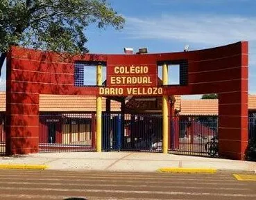

Bem-vindo ao Colégio Estadual Dário Vellozo

Entrada Principal do Colégio Dário Vellozo.

Entrada Principal do Colégio Dário Vellozo.
O Colégio Estadual Dário Vellozo é uma instituição de ensino localizada em Toledo-PR, dedicada à formação acadêmica e cidadã de seus estudantes. Com uma estrutura voltada para o aprendizado e o desenvolvimento, a escola busca oferecer um ambiente acolhedor e de qualidade para toda a comunidade escolar.